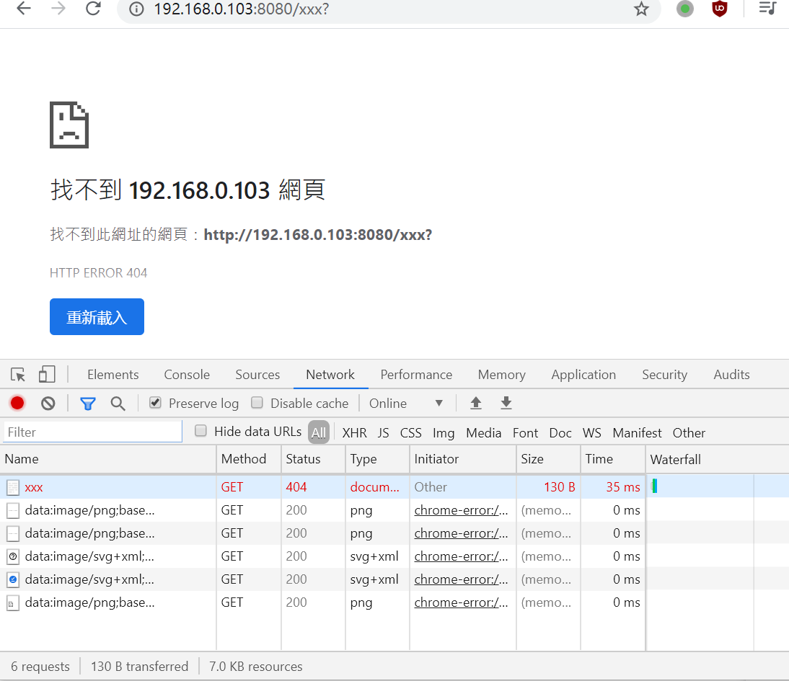
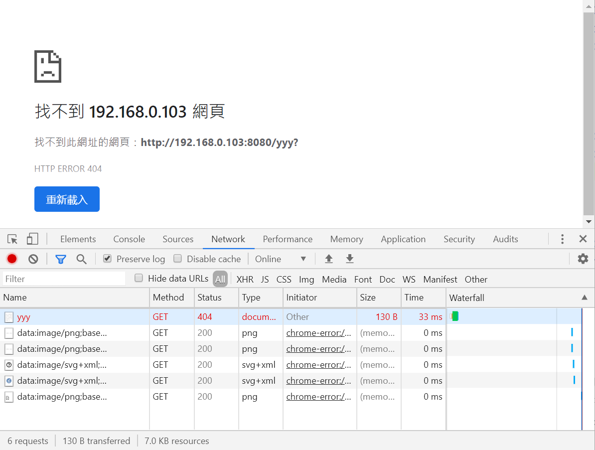

POSTS
如何在hugo中插入图片并上传之GitHub pages
, 645 words1 和 2 是在 posts 中建了一个文件夹“图片测试”，然后将图片加到文件夹里，**再建一个且必须名为 index.md**文件。 x 只在 posts 中有，y 在 posts 和 static/images/中,c 只在 static 中。
最新结论：
必须要将图片放到 posts 里。若同时在 static 中有此图片，则有两种写法，否则，只能写第一种。
两种写法：
1.formxxx.png
6.y static/../formyyy.png
第 7 种写法在本地网页预览可以，在 juruonan.xyz 不可以。
结论，两种方法可行 AB：
1.formxxx.png
2.y posts formyyy.png
6.y static/../formyyy.png
7.static/../c.png
A:建一个以文章名称命名的文件夹，里面放一个 index.md 文件，图片等文件就也放当前文章这个文件夹里面即可。
B:在 static/images 中加入图片，然后图片 src 写 static/../c.png 即可。
测试结果如下：
1.x posts formxxx.png:

2.y posts formyyy.png:

3.y static/../../../../static/images/formyyy.png :
 4.y /public/images/formyyy.png :
4.y /public/images/formyyy.png :
 5.y static/../../../../themes/ananke/static/images/gohugo-default-sample-hero-image.jpg :
5.y static/../../../../themes/ananke/static/images/gohugo-default-sample-hero-image.jpg :
 6.y static/../formyyy.png :
7.c static/../c.png (本地预览不了):
6.y static/../formyyy.png :
7.c static/../c.png (本地预览不了):
 8.c static/../../../../static/images/c.png :
8.c static/../../../../static/images/c.png :

9.c static/images/c.png :

如果是要插入图片的，就建一个以文章名称命名的文件夹，里面放一个 index.md 文件，图片等文件就也放当前文章这个文件夹里面即可。
这样，既能保证本地编辑是能实时渲染，也能保证最终呈现是正确无误的，而工作环境仅需要考虑当前文件夹，不用翻来覆去地寻找和核对。
而如果是不需要插入图片的文章，依然还是一个以文章名称命名的 .md 文件即可。
如果需要转移文章到新的目录，或者是寻找一个图片，都无需担心太多，直接操作，以文件夹为管理核心即可。
这便是我的内容资源管理方案，很不错了。
废话这么多，还是不如放一个文件夹路径图来的有视觉感：
├── posts
│ ├── 2018-04-13-搜索服务的.md
│ ├── 2018-04-18-小到 Hugo.md
│ ├── 2018-04-26-图片测试
│ │ ├── formxxx.png
│ │ ├── formyyy.png
│ │ └── index.md
│ ├── 2018-05-02-12345.md
│ └── 2018-05-03-Hugo 的文件管理方案.md